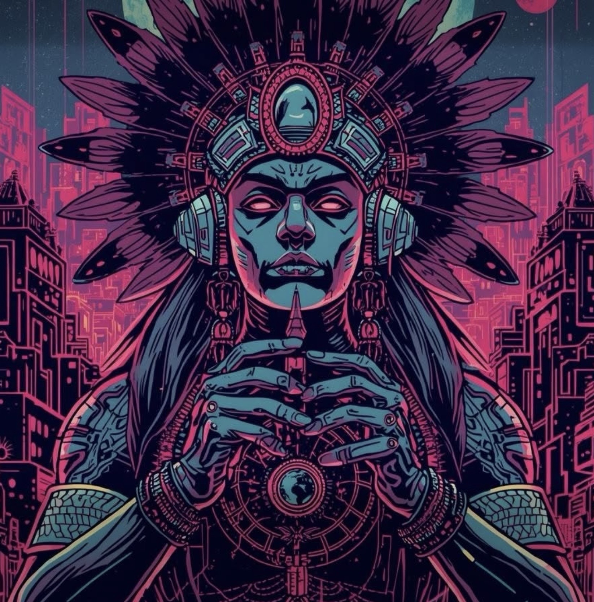

V1.0
Sistema de castas
La jerarquía racial como arquitectura de gobierno. La mezcla no iguala: clasifica.
indioyori@anahuac : ~/libro $

INDIO YORI
Un libro para quien salió del campo, llegó a la ciudad y aún no sabe cómo nombrar lo que le falta.
01 — La tesis
El Estado no te unió: te instaló un código. Ese código produce sujetos que nunca son lo bastante blancos, lo bastante modernos, lo bastante legítimos.
V1.0
La jerarquía racial como arquitectura de gobierno. La mezcla no iguala: clasifica.
PORT
1810–1917: el despojo deja de necesitar colonizador. Se vuelve Constitución, escuela y Ley Lerdo.
V2.0
Vasconcelos codifica el futuro: absorber lo indígena, borrar lo afro, fabricar ciudadanía sin tierra.
V3.0
La misma lógica, actualizada: lo pensable se estrecha a máxima verosimilitud. El olvido se automatiza.
02 — Para quién
Este libro no habla a la academia primero. Habla a quien carga el vacío sin manual.
Distinción ética
Producto del sistema. Vive el desarraigo como si fuera clima. Potencialmente recuperable para la conciencia.
Traidor consciente. Sabe que hay raíz — indígena, afro, campesina — y elige negarla para ascender dentro del código.
No es sangre. Es posición. ¿Ejecutas el código o lo desinstalas?
03 — Índice comercial
Adaptado del manuscrito de 133 páginas y del working paper académico a una edición legible, directa y vendible.
04 — Identidad de la edición
Tipografía monoespaciada, página limpia, acentos del avatar IndioYori. Sin adornos que distraigan del argumento.
“El mestizo es el individuo que el Estado fabrica para que deje de ser pueblo y se convierta en población administrable.”
— Dolores Méndez Valdez
05 — Precio digno
Precio anclado en valor intelectual y costo justo de producción — no en dump de marketplace.
eBook
MXN $249
≈ USD $14 · EPUB + PDF tipográfico
Impreso
MXN $449
≈ USD $25 · rústica 5.5×8.5"
Edición firmada
MXN $690
Tiraje limitado · avatar en sobrecubierta